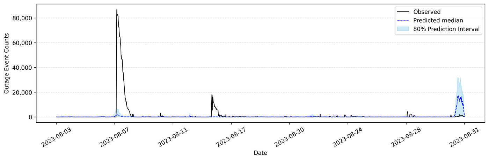
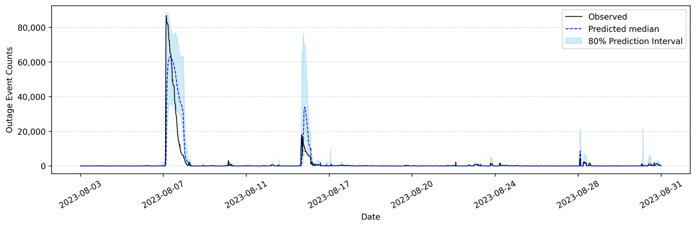
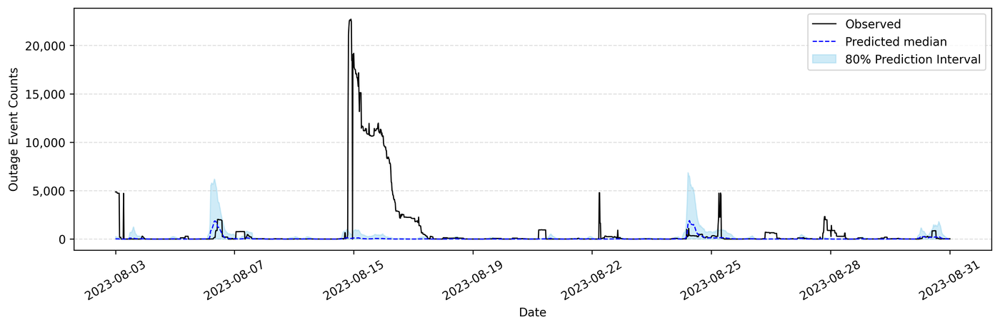
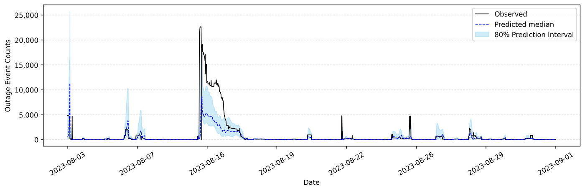
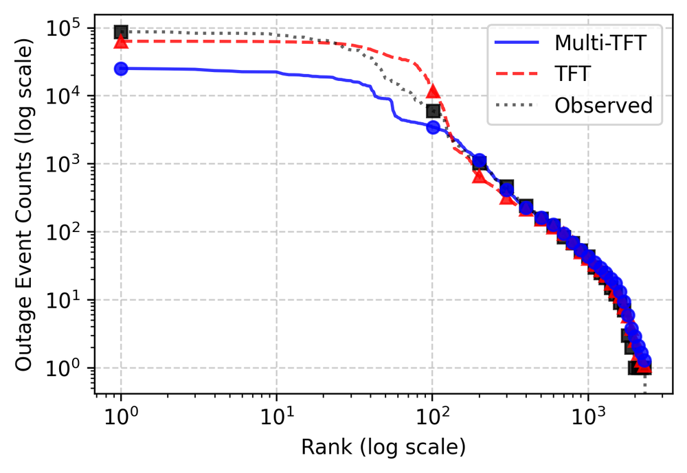
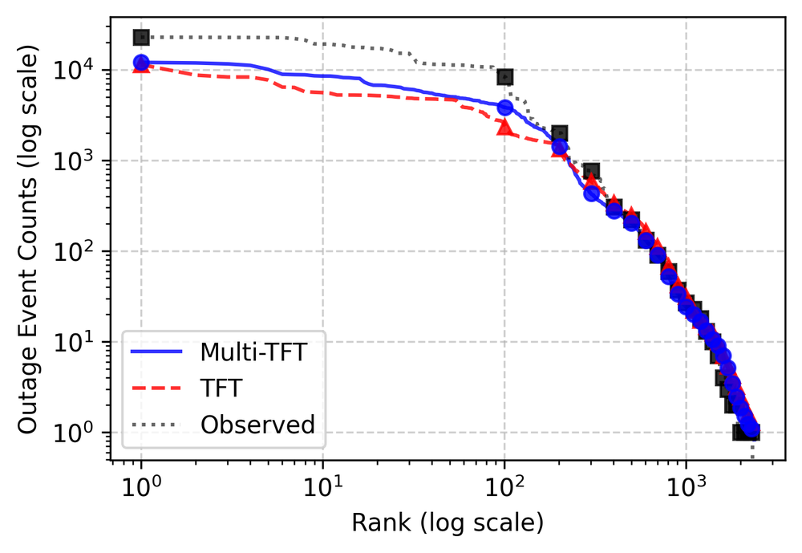

Multi County Under review
Forecasting Rare, Large-Scale Weather-Induced Power Outages Using Temporal Fusion Transformers: A Multi-County Study for Building Energy Resilience
This study presents a county-level outage forecasting framework that integrates meteorological and outage data to support building energy resilience during extreme weather events. Using 15-minute time-series data from Wake and Guilford Counties, North Carolina, the Temporal Fusion Transformer (TFT) was developed in single- and multi-county learning configurations and benchmarked against a Long Short-Term Memory (LSTM) baseline.
Study area
Both counties belong to climate zone 3A (Warm-Humid), but they differ in population structure, urbanization, industrial composition, and utility service territories.
Findings
1The TFT outperformed the LSTM across most metrics in both counties
The TFT more accurately reproduced the timing and onset of major outage peaks, and its uncertainty intervals adjusted adaptively to event magnitude. The LSTM tended to smooth them out.








| County | LSTM R² | TFT R² | LSTM MAE | TFT MAE |
|---|---|---|---|---|
| Wake | −0.04 | 0.66 | 1,782.75 | 1,029.44 |
| Guilford | −0.08 | 0.42 | 899.39 | 526.90 |
2Multi-county learning helped Guilford County, but not Wake County
Multi-county training improved performance across all metrics in Guilford County, whereas in Wake County it reduced central-range accuracy and tended to underestimate the largest events. Across both counties, the Multi-TFT reduced the q0.90 Quantile RMSE.
| County | Model | R² | MAE | Quantile RMSE (q0.90) |
|---|---|---|---|---|
| Wake | TFT | 0.66 | 1,029.44 | 9,369.08 |
| Multi-TFT | 0.44 | 1,075.69 | 4,329.62 | |
| Guilford | TFT | 0.42 | 526.90 | 1,729.10 |
| Multi-TFT | 0.52 | 468.48 | 1,650.39 |




Rank–Frequency distributions of predicted (median) and observed outages. Events are ranked from largest (left) to smallest (right) on logarithmic axes.
Takeaway
Single- and multi-county models are complementary
The single-county model is well suited to high-resolution, region-specific forecasting, particularly in regions with pronounced extreme-event tails, while the multi-county model can offer broader distributional representation where cross-regional data diversity is beneficial. The value of multi-county learning depends on the load composition and outage characteristics of each region.
Study details
- Outage data: DOE EAGLE-I · 15-minute intervals, 2018–2023 · weather-related events only (NOAA, PNNL)
- Weather data: ASOS stations KRDU (Wake) and KGSO (Guilford) · population and households as static covariates; a county identifier in the multi-county model
- Setup: summer season (June–October) · both counties tested on August 2023
- Limitations: one season and two counties; physical constraints of the power network and cascading failures are not explicitly represented